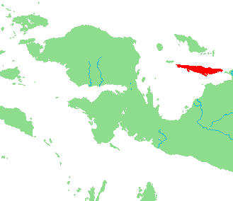

Selamat!
Sekitar 200 jumlah jiwa tinggal di Kampun Wooi dan bicara bahasa Wooi. Kampun Wooi di tengah pulau Yapen dalam teluk Cenderawasih di Papua Barat, Indonesia. Pulau Yapen merah di bawah. Orang papua bicara ratusan bahasa, tetapi lebih banyak orang bicara bahasa Indonesia dan orang lebih sedikit bicara bahasa lainnya. Center for Endangered Languages Documentation (CELD) dengan Universitas Papua (UNIPA) pertahankan ini bahasa dan bahasa pu budaya dengan linguistik.
Ini situs web dengan CELD mengajar bahasa Wooi. Terima kasih banyak As part of these efforts, this website teaches some of the basics of Wooi, as found through consultation with and recording of native Wooi speaker Jimmi Karter Kirihio, a CELD employee. Many thanks to Jimmi for his time and voice, Professor Emily Gasser for all of her guidance and patience, Swarthmore College's Joel Dean Summer Research Fellowship for making this project possible, and everyone else who put up with my limited knowledge of Indonesian.